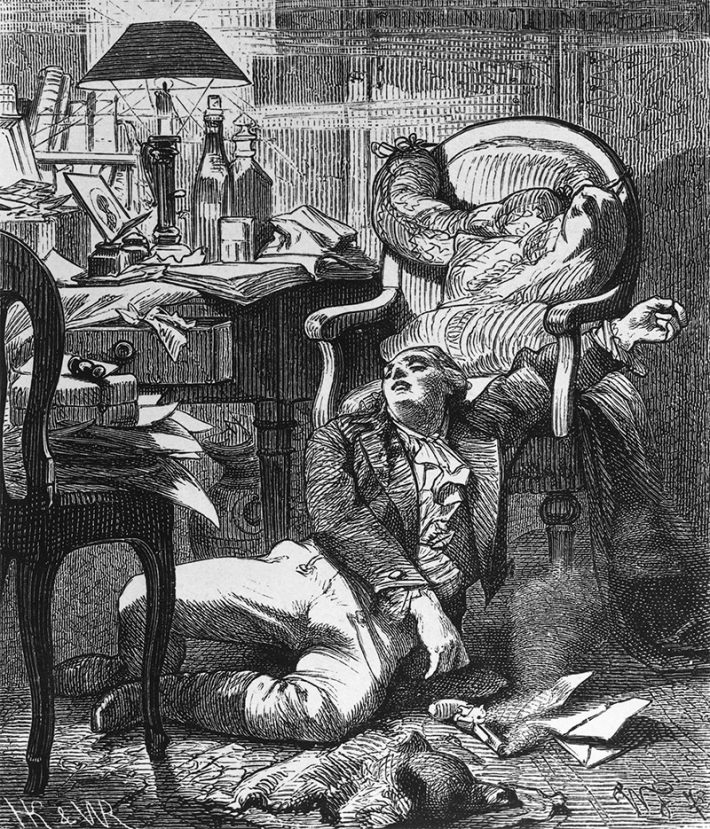

These days, many people struggle to keep up with the state of the world without being overcome by a sense of despair that’s as profound as it is difficult to describe. Unless you happen to speak German.
The German language, a popular saying goes, has a word for everything. There’s Schadenfreude and Zeitgeist, of course. But it’s perhaps time we get more acquainted with Weltschmerz, a word which literally translates to “world pain.”
Nautilus premium members can listen to this story, ad-free.
Nautilus members can listen to this story.
Coined by the German writer Johann Paul Richter in his 1823 novel Selina, Weltschmerz has been used by scholars to signify a unique type of sorrow that is linked not to personal hardship but the hardship of others; not to one’s own misfortune, but the misfortune of the world at large. It pervades certain works of literature and philosophy, from Wolfgang von Goethe’s The Sorrows of Young Werther to Arthur Schopenhauer’s World as Will and Representation and was characterized by one critic as “abnormal sensitiveness … to the moral and physical evils and misery of existence.”
It may have been birthed more than two centuries ago, but Weltschmerz seems to be increasingly rearing its head in blog posts, YouTube videos, and self-help books that discuss how social media, global warming, political unrest, and other fixtures of 21st-century life are eating away at our collective mental health. This imposing word neatly encapsulates the mix of sadness, hopelessness, fear, distrust, and rage that many of us feel while doomscrolling our way through seemingly endless supplies of disturbing and disheartening headlines.
Weltschmerz literally translates to “world pain.”
Whether Weltschmerz is indeed a particularly strong element of our current Zeitgeist or a feature of the individual human condition is difficult to say, largely because research on the specific psychological phenomenon remains all but unexplored by science.
To study Weltschmerz, of course, you first have to properly define it. This is easier said than done. The German poet Heinrich Heine, who died in 1856, described it as rumination on the “transience of life on Earth,” framing it as an existential issue. Ralph Ellison, who referenced Weltschmerz in his 1952 novel The Invisible Man, appears to have connected it to generational trauma, in this case as a Black person in America. The Cambridge Dictionary defines Weltschmerz as a “feeling of sadness and lack of hope about the state of the world.” Merriam-Webster, as “depression or apathy caused by comparison of the actual state of the world with an ideal state.”
These diverging, at times contradictory interpretations call the precise nature of Weltschmerz into question. Does it stem from—and take the shape of—pessimism or optimism? Nihilism or idealism? Apathy or care?
The most obvious risk factor for flare ups of Weltschmerz is exposure to the suffering of others. Research has long shown that people who interact with traumatized individuals—including emergency medical services personnel and family members of the terminally ill—are at risk of experiencing psychological distress themselves. More recent studies indicate that this distress, sometimes referred to as vicarious or secondary trauma, can develop even without direct contact, including through social media imbibing and news consumption. This suggests Weltschmerz is more common today than it was in the past, when dispiriting news of world events were not delivered directly to our pockets 24/7.
Another possible risk factor is the way people construct their sense of self. According to Marc Williams, a clinical psychologist and an honorary senior lecturer at Cardiff University in Wales, the emotional impact of events we experience has less to do with the event itself than the meaning and weight we attribute to it. “What feels impersonal to one person may feel deeply personal to another,” he says. In previous centuries, people’s inner circles were limited to their families and towns. Today, thanks to factors like nationalism, mass migration, and technology, our in-groups—and, by extension, sense of self—readily transcend borders, languages, and cultures. And as our identities expand, so does our concern for those with whom we identify. And it can even extend beyond the human, Williams says. “For climate anxiety, for example, research has found associations with higher levels of nature connectedness, or identification with the natural world.”

I'D WERTHER NOT: Weltschmerzhas run as a trope through literature and philosophy for more than two centuries. This state of being has tormented protagonists from the unnamed hero of Ralph Ellison's The Invisible Man to Wolfgang von Goethe's poor Werther, pictured here. Credit: Laganrat / Wikimedia Commons.
Identity, then, opens the door to another potential risk factor: affective empathy. Whereas cognitive empathy refers to the ability to understand someone else’s thought processes, affective empathy is the capacity to feel another’s emotions. Affective empathy helps us form and maintain relationships, but excessive or unregulated empathy can lead to what Williams describes as “emotional overload, the psychological burden of continually feeling others’ pain”—a burden which increases susceptibility to psychological distress, psychiatric disorders, and perhaps Weltschmerz.
One final factor is cognitive dissonance, defined in one literature review as frustration that arises when “people are confronted with facts that contradict their beliefs, values, and ideas.” Though not always emphasized in equal measure, disjunction between personal expectations and perceived reality is a recurring theme in literary and philosophical Weltschmerz discourse. Miles Groth, an existential therapist, expert on continental European philosophy, and professor emeritus in psychology at Wagner College in New York City, suggeststhat the idea of Weltschmerz arose at a very specific time: when “religious feelings that suffering is inevitable disappeared from the West.”
Indeed, where people from the devoutly Christian Europe of the Middle Ages are thought to have accepted and found comfort in the fact that everything—including evil—was part of God’s divine plan, those born in later centuries tended to operate according to a different set of expectations. Where faith gave way to science, the evils of pain, suffering, and injustice came to be regarded as avoidable, unnecessary, and by extension intolerable.
In this sense, Weltschmerz could be framed as an expression of the shattered assumptions theory. Formulated by social psychologist Ronnie Janoff-Bulman in her 1992 book Shattered Assumptions: Towards a New Psychology of Trauma, this theory proposes that certain experiences are traumatizing in large part because they dismantle our most basic assumptions about existence. Even getting this information third-hand, for example by doomscrolling, might spark a similar reaction. A 2024 study in Iran and the United States found that social media exposure to “meaning-threatening” stimuli, such as famines and genocides, can cause existential anxiety as well as misanthropy: mistrust and hatred of humanity and even oneself. While existential anxiety matches Heine’s definition of Weltschmerz (preoccupation with the ostensible shortcomings of existence), misanthropy evokes Weltschmerz as expressed in the work of Schopenhauer, whose pessimistic attitude toward human civilization led him to prefer a life of asceticism and solitude.
As for Weltschmerz’s clinical applications, it’s possible that the condition is merely a symptom of other, better defined and more extensively researched psychiatric conditions. After all, Heinrich Heine, Friedrich Hölderlin, and Nikolaus Lenau, German poets whose unwaveringly melancholic oeuvres form the bedrock for both literary and philosophical inquiries into Weltschmerz, all had complicated medical histories, having retrospectively received diagnoses for either severe depression or schizophrenia.
Thomas Pyszczynski, a professor emeritus of psychology at the University of Colorado, Colorado Springs and one of the founding fathers of terror management theory (which posits fear of death as a key motivator of behavior and mental well-being), is collecting data on people experiencing “psychological distress” in response to Donald Trump’s political career. He suggests that his study subjects may not be feeling what constitutes Weltschmerz but rather a “subclinical form of PTSD” that “could reach clinical significance in some people.”
Aaron Fisher, an associate professor of psychology at the University of California, Berkeley, cautions against classifying Weltschmerz as a distinct psychological phenomenon, arguing that, in both clinical and research settings, the focus should be on the way we respond to stimuli, not the stimuli themselves; on the output, not the input. So, he said, stressors “need not be classified as ‘world’ vs. ‘community’ vs. ‘self,’” and making too big of an effort to do so yields “diminishing returns.”
Weltschmerz is more common today than it was in the past.
Williams, by contrast, does propose that Weltschmerz can be distinguished from other psychiatric conditions. While clinical levels of depression and anxiety can be debilitating, Weltschmerz need not result in functional impairment. “It can be a deeply felt experience without meeting the criteria for a mental health problem,” he says. Something like climate anxiety encompasses a broad range of emotions and relates not only to “inner suffering but also moral distress,” making it difficult to categorize as a psychological condition.
The mental discomfort produced by Weltschmerz needn’t be paralyzing—and actually might in many cases serve as a source of motivation. Williams notes that a recent study he was involved in found that climate anxiety was associated with high levels of “intention to engage in pro-environmental behaviors.” The same can be said about anxiety regarding political events, with one 2023 study finding that people who reported “more politics-related negative emotions” also “reported greater motivation to act on political causes by doing things such as volunteering or donating money to political campaigns.”
Whether activism can be used to treat Weltschmerz depends on the situation. In some cases, joining other people in working toward achieving a common goal can indeed provide a welcome feeling of purpose and community, improving our mental health. In others, lack of progress toward achieving such goals—especially lofty ones like ending global poverty or convincing governments and corporations to work together to mitigate global warming—can actually have the opposite effect: reducing our sense of agency and fueling the very despair we wish to keep at bay.
On the flipside, Weltschmerz can also be treated by retreating from the outside world. This remedy was one used by Schopenhauer, who, convinced that the problems plaguing the world were both endemic and unsolvable, spent much of his adult life in self-imposed isolation from society. Today, Schopenhauer’s preferred treatment plan survives in the form of both physical and especially digital detoxes. But while research shows that taking a break from the doomscroll-inducing algorithms of social media platforms has noticeable psychological benefits, the strategy is ethically thorny. By deleting TikTok and turning off the evening news, we’re turning a blind eye to suffering in ways that those less fortunate than us cannot.
In clinical practice, the most effective treatments for Weltschmerz balance engagement with disengagement, a middle ground between taking action where possible and recognizing what is and isn’t beyond our individual control. As Cynthia Shaw, a clinical therapist specializing in existential anxiety and founder of Authentically Living Psychological Services in New York City, explains:
“One of the hardest parts is walking the line between validation and paralysis. You can’t reassure someone that everything will be fine, because they’re right, some things aren’t OK,” she says when I asked her about how people can best manage Weltschmerz-related distress without compromising on their moral values. “And yet, staying in a perpetual state of despair isn’t sustainable either. So, the goal in therapy isn’t to ‘fix’ the world, nor the person. It’s not about not caring. It’s about figuring out how to care differently.” 
Lead image: Valazarus-Studio / Shutterstock